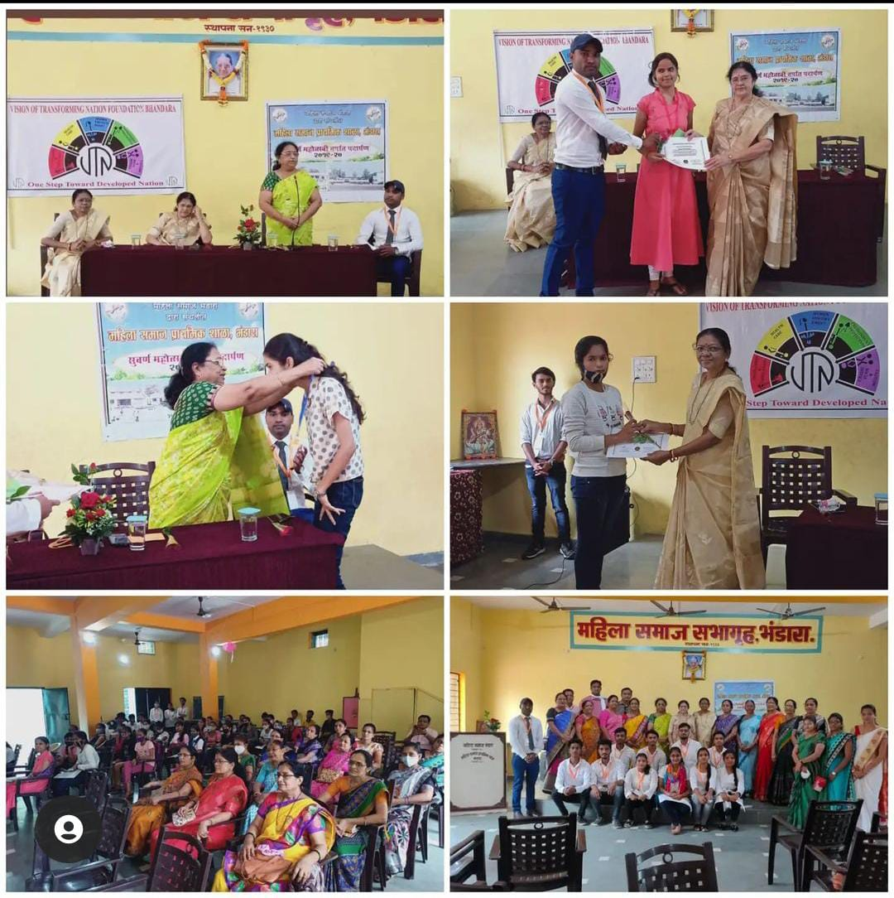

VISION OF TRANSFORMING NATION FOUNDATION , BHANDARA
GOAL
To Inspire:
-To impel youth towards social work by making them understand the importance of social service.
To Educate:
-To provide free education to noody children.
-To Aid them in getting employed.
To Protect Environment:
-To aware citizens regarding one's roles and responsibilities towards protection of environment.

Activities:
1. Plantation program by seed hall concept.
2. Plantation on world Environment Dag.
3. Bus Stop sanitization program.
4. Covid survey and health checkup in different-different villages like Tavepar, Khunshipur, Satona, Dabha, and so on.
5. Street play on the occasion of 75th Independence Day of India to show the problems arising in our country.
6. Plantation program on the occasion of teachers dag in Ganeshpur.
7. Essay writing Competition for students.
8. Visit to Orphanage on the occasion of children's Day.
Upcoming Activities:
-NGO unts to provide self protection techniques for girl through domains DAMINI PATHAK of our City.
-VTN likes to literate our youth means the pillars of our nation by organising such seminars and other educational programmers for them.
-VTN wants to encourage & support the needy students who have guts for study but not able to take costly education because of their poor situations and so on.
-As we see most difficult challenge that we are facing is environmental degradation, resulting form deforstation, pollution, and climate change that why VTN desires to shield car enowonment.
-VTN crave help who are unable to ask uncomfortable question an issue lhe violence against Dalits. And also take responsibilities of citizens trouble form solving through our government of district.
-Robotics Seminar.